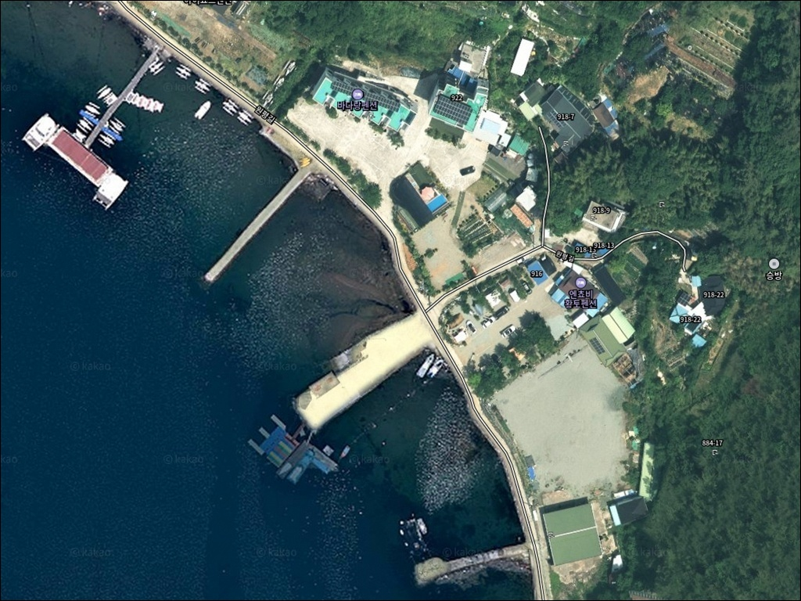
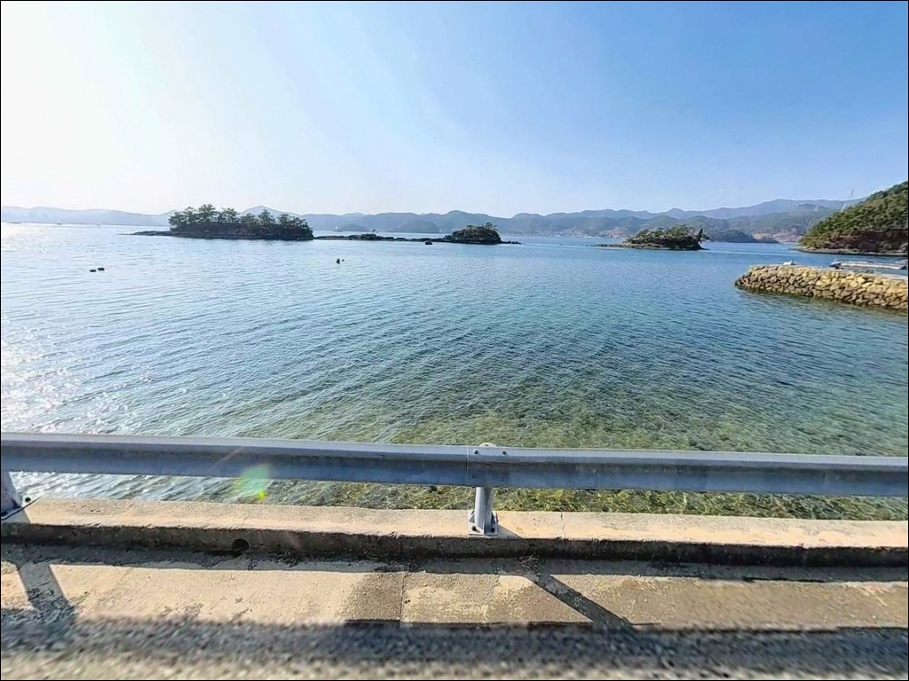
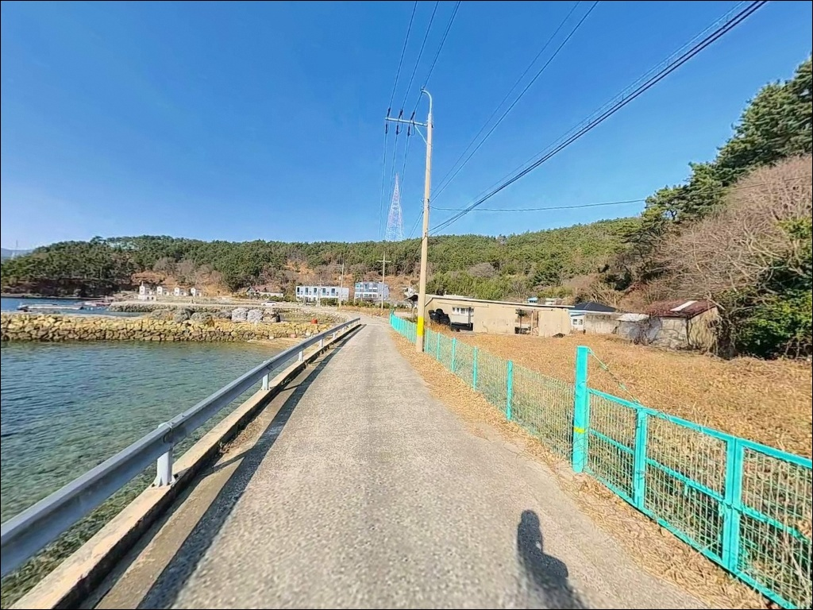
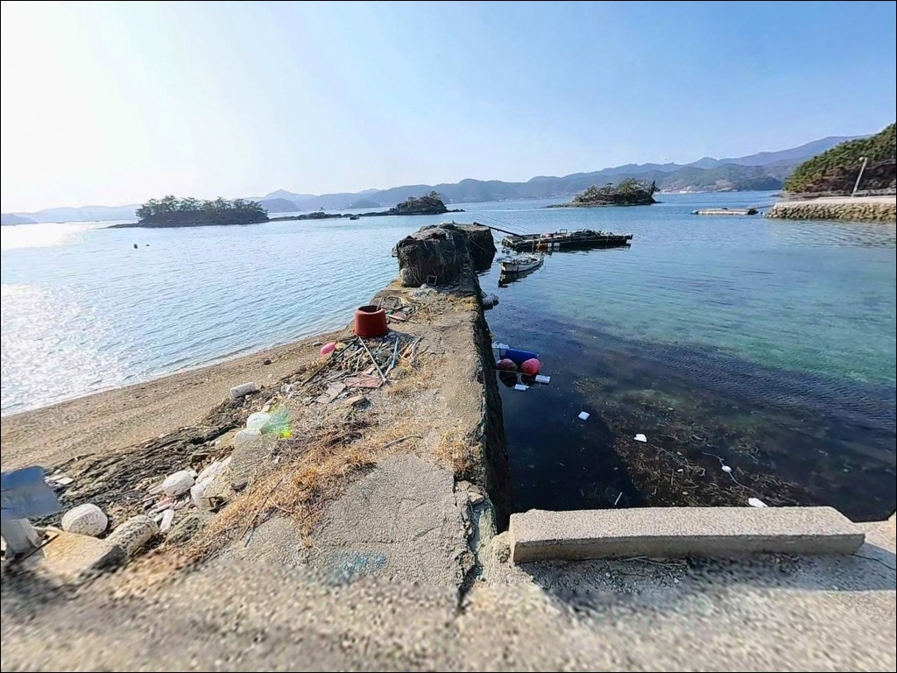
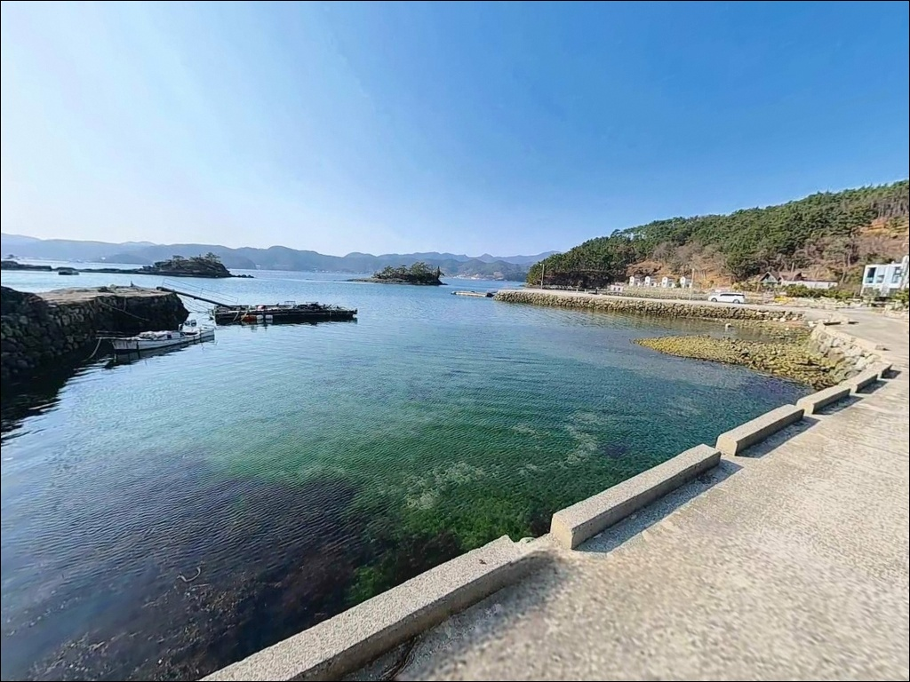
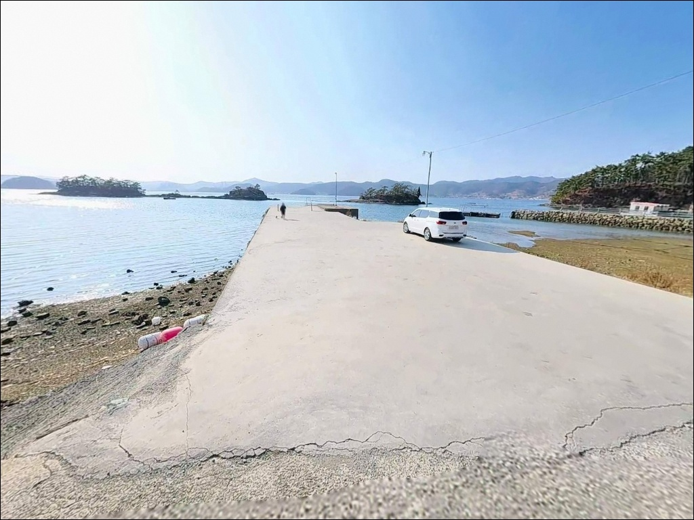
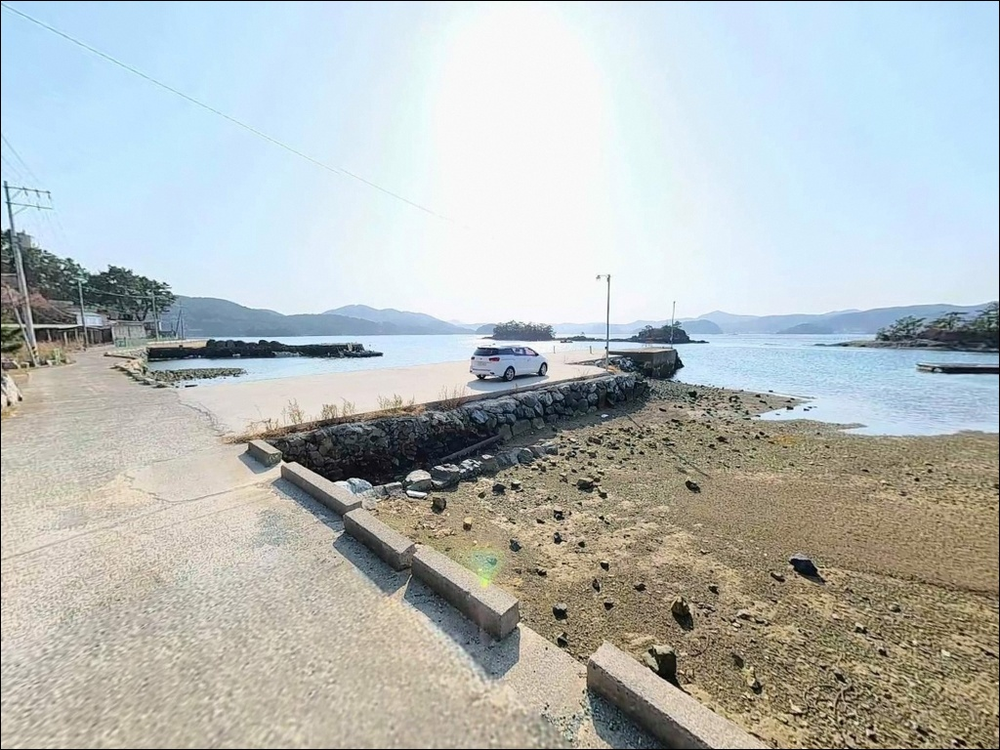
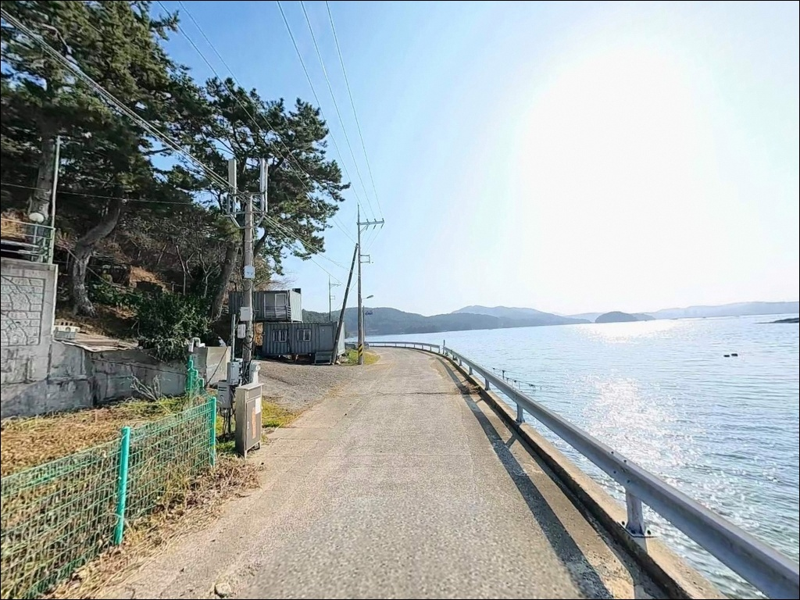

조류 약한 내만이라 방심했던 승방방파제, 만조 전후 살아난 원투낚시 입질
이 페이지에는 광고(제휴 링크 포함)가 있으며, 광고 링크를 통해 구매하면 운영자가 판매 수익 또는 수수료를 받을 수 있습니다. 포인트 사진: 카카오맵 스카이뷰·로드뷰. 이 페이지의 지도·사진 이미지는 카카오맵의 실제 서비스 이미지와 다를 수 있습니다.


포인트 안내
승방방파제
경남 통영시 용남면 원평리 1140-17
내만 방파제라 조류가 약하다고 판단하고
물때와 무관하게 아무 때나 입장하면
채비는 멀쩡해도 입질이 끊기는 시간대가 깁니다.
승방방파제는 견내량 인근 내만 끝자락에 위치해
만조 전후 조류 소통이 살아나는 타이밍이
낚시 여건을 가르는 기준입니다.
이 글은 승방방파제의 진입 환경, 낚시 지형 분석,
낚시 방식별 적합성, 차박 여건에 집중합니다.
조황 단정이나 특정 어종 보장은
이 글의 범위에 포함되지 않습니다.

1. 포인트 위치와 진입 동선 분석
승방방파제는 통영시 육지부 동쪽 끝단,
원평리 끝바리에 자리한 소형 마을 방파제입니다.
거제도와 통영 사이 해협인 견내량 인근의
완전 내만 구조로,
외해 노출이 거의 없어 파도와 너울 영향은
거의 받지 않는 지형입니다.
동통영IC에서 14번 국도(거제대교 방면)를 타고
원평리 표지에서 좌회전 후
승방마을 방향으로 진입합니다.
마을 끝자락까지 포장도로로 연결되어 있으나
마을 안길은 일반 승용차 기준 교행이
가능한 수준이며,
진입 끝단은 회차 공간이 제한적입니다.
초행이라면 출발 전 위성지도로
진입로 끝단 구조를 확인해두는 편이 좋습니다.
방파제 4기 앞 공터에 소수 차량(2~4대 내외) 주차가 가능하며,
마을 안길 입구 쪽 도로변 여유 구간이
2차 주차 후보가 됩니다.
어선 출입 동선과 겹치는 구간이 있으므로
정박 어선 앞은 피해 자리를 잡는 것이 기본 매너입니다.

2. 차박 환경과 야간 체류 여건
승방방파제는 원평리 끝바리의 마을 소형 포구에
인접한 방파제입니다.
민가와 10~30m 내외로 가까이 붙어 있어
독립된 차박 공간을 확보하기가 쉽지 않습니다.
주민 생활 동선과 낚시 동선이 겹치는 구조이므로,
야간 차박 숙영보다는
낚시 후 단순 대기·휴식 수준으로
활용하는 것이 현실적입니다.
야간 조명은 마을 가로등 수준으로
마을 내부에는 기본 조명이 있으나
방파제 선단으로 갈수록 빛이 약해집니다.
헤드랜턴과 개인 보조등은 반드시 지참해야 하며,
야간 소음은 최소화하는 것이 마을 예절입니다.
내만 구조라 파도 소음은 거의 없는 편이고,
야간에는 통행 차량이 드물어 조용한 환경이 유지됩니다.
외항 쪽은 난간 없이 노출된 구간이 있으므로
야간 이동 시 발 디딤에 주의해야 합니다.
바람이 강한 날은 내만이라도
소형 방파제 발판이 불안정해질 수 있어
기상 예보 사전 확인이 필요합니다.


3. 주변 편의시설과 인프라 현황
원평리 내에 기호수퍼(원평리 616-1)와
백산주유소(원평리 892-1)가
지도에 등재되어 있습니다.
기본 식료품과 연료는 마을 내에서
어느 정도 해결이 가능한 구조이나,
편의점 수준의 대형 매장은
반경 3km 이내에 확인되지 않습니다.
낚시 채비나 아이스팩 등 소품이 필요하다면
용남면 소재지 방향으로 이동하거나
통영 무전동·죽림지구(차로 10분 내외)까지
나가는 편이 효율적입니다.
해당 권역에는 대형 마트와 낚시점이
밀집해 있어 출조 전 준비 거점으로 활용하기 좋습니다.

4. 방문 전 준비사항과 체크 포인트
승방방파제를 찾기 전 가장 먼저 확인할 것은
물때입니다.
견내량 인근 내만 특성상 조류가 전반적으로 약하고,
만조 전후에 조류 소통이 살아날 때
어류 활성도가 올라가는 패턴입니다.
바다타임에서 원평리 또는 용남면 기준 물때를 확인하고
만조 전후 2~3시간을 중심으로
출조 시각을 맞추는 것이 기본 전략입니다.
굴 수하식 양식장이 연안에 분포하는 해역 특성상
캐스팅 방향에 주의가 필요합니다.
채비를 던질 때 양식 어구 방향을 피해
외항 쪽으로 각도를 잡는 편이 손실을 줄입니다.
원투낚시 채비는 밑걸림이 적은 편이나
여분 채비는 넉넉히 챙기는 것이 좋습니다.
방파제 낚시 시 구명조끼 착용은 기본이며,
외항 노출 구간에서는 발판 단차에 주의합니다.
마을 선착장 기능을 겸하는 공간이므로
어선 출입 시간대에는 동선을 양보하고
어구를 가로막는 자리는 피하는 것이
지속 이용의 전제 조건입니다.

5. 지형 기반 낚시 여건 분석
승방방파제는 원평리 끝바리에 4기의 소형 방파제가
마을 선착장과 낚시 포인트를 겸하는 구조입니다.
방파제 끝단으로 갈수록 수심이 깊어지며,
5~8m 내외의 수심이 형성됩니다.
바닥은 사질과 여밭이 적절히 섞인 구조로,
저서성 어종이 붙기 좋은 바닥 조건을 갖추고 있습니다.
견내량 해협과 인접한 위치 덕분에
만조 전후 조류 소통이 방파제 끝단을 스쳐 지나가는 구간이 형성됩니다.
이때 외항 방향으로 채비를 보내면
회유성 어종과 저서성 어종 모두
탐색 범위 안에 들어오는 구조입니다.
내만형 방파제라 너울과 파도는 거의 없어
채비 안정성이 높은 편입니다.
4기 방파제 중 정박 어선이 없는 구간을
실제 낚시 자리로 활용합니다.
방파제 끝단 수심 급변 구간이
원투 포인트로 유효하며,
측면 석축 구간과 외항 경계선도
탐색할 만한 자리입니다.
가기 전에 용남면 일대 및 통영 내만 조황을
먼저 검색해 보시기 바랍니다.


낚시 포인트 선택 전 확인해야 할 방식별 공략 조건
이 포인트에서 가장 기본이 되는 방식은
원투낚시입니다.
방파제 끝단이나 선착장에서 외항 쪽으로
30~50m 권 바닥 채비를 보내면
도다리·노래미·붕장어를 노리기에
지형 조건이 잘 맞습니다.
굴 양식 어장 인근 바닥은 먹이 생물이 풍부해
저서성 어종이 붙는 환경을 형성합니다.
민장대낚시도 이 포인트 구조에 잘 어울립니다.
소형 방파제에서 근거리 포인트를 빠르게 탐색하는 데 적합하며,
방파제 발치 가까운 구간을 집중적으로 노리는
가벼운 생활낚시 스타일에 맞는 여건입니다.
볼락 라이트게임도 시도해볼 만합니다.
방파제 발치와 석축 경계 구간에서
소형 지그헤드와 소프트베이트를 활용하면
볼락·전갱이류 반응을 기대해볼 수 있는 구조입니다.
야간에는 마을 가로등 아래 구간에서
라이트게임 효율이 올라가는 편이며,
수온이 안정되는 가을에서 초겨울이 집중 시즌입니다.
찌낚시는 만조 전후 조류가 소폭 흐를 때
방파제 외항 측면을 따라 흘리는 방식으로 운용합니다.
내만 특성상 조류가 약해 채비 이동 범위가 좁은 편이라,
고부력 채비보다 소형 채비를 조류에 태우는 방식이
이 지형에 현실적으로 맞습니다.

7. 대안 포인트와 플랜 B 동선
승방방파제 주차 여건이 여의치 않거나
조황 흐름이 맞지 않을 때는
내포마을 방파제가 첫 번째 대안입니다.
승방방파제에서 약 1~1.5km 거리의
동일 해안선에 위치하며,
같은 내만 조건에서 낚시 방식과 어종 패턴이
유사하게 형성됩니다.
용남면 장문리 방향으로 이동하면
기호방파제가 있습니다.
승방방파제에서 5~7km 거리로,
동일한 용남면 내해권에 속해
조류 패턴을 공유하는 포인트입니다.
규모가 더 크고 낚시 자리 선택 폭이 넓어
당일 상황에 따라 이동 효율이 좋은 대안입니다.
원투낚시 중심으로 공략 범위를 넓히고 싶다면
내포방파제와 기호방파제를 묶어
당일 동선으로 구성하는 것도 방법입니다.
출조 전에 용남면 일대 최신 조황을
검색해 포인트 상황을 먼저 파악하고
이동 동선을 결정하는 편이 빈걸음을 줄입니다.

물때와 방식을 맞추면
승방방파제가 달라 보입니다
원투낚시나 볼락 라이트게임을 즐기는 낚시인이라면
승방방파제의 지형 조건은 나쁘지 않습니다.
사질과 여밭이 섞인 내만 바닥, 5~8m 수심,
견내량 인근에서 오는 조류 흐름이
복수 방식 공략을 가능하게 하는 포인트입니다.
아직 많이 알려지지 않은 조용한 마을 방파제라
직접 답사해 보기 좋은 탐방형 포인트이기도 합니다.
반면 차박 독립성이나 편의시설을 우선시하는 분께는
이 포인트보다 통영 죽림해안로 방면이나
거제대교 주변 인프라를 갖춘 장소가
더 편한 선택이 될 수 있습니다.
물때 확인, 자급 준비, 진입로 사전 파악,
이 세 가지를 갖추고 찾는다면
용남면 내만의 조용한 낚시 여건을
충분히 즐길 수 있는 장소입니다.
가로등 불빛 아래 민장대를 펴고
만조를 기다리는 낚시와
차 안에서 조용한 마을 밤을 보내는 차박은,
이 포인트에서 함께 누릴 수 있는
가장 현실적인 조합입니다.